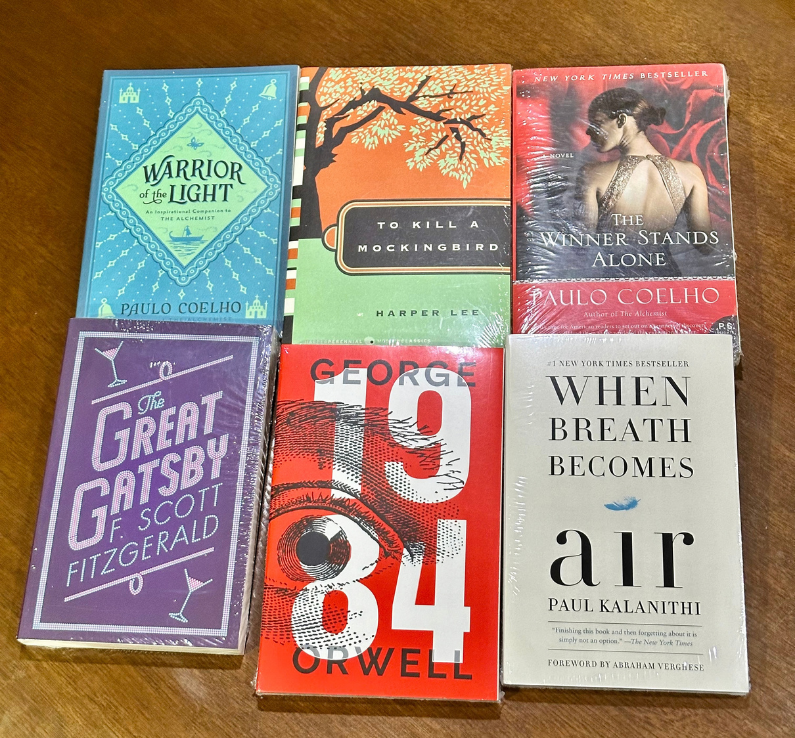
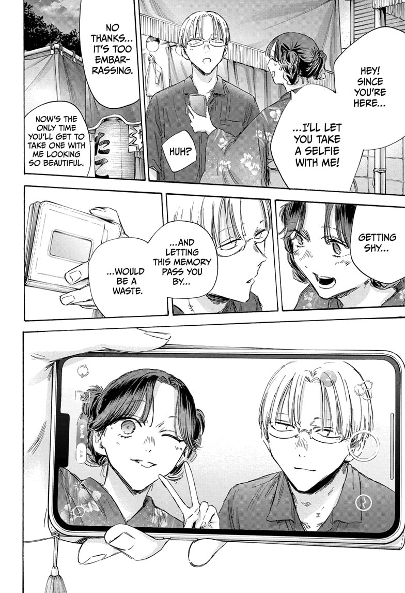

I demonstrate my linguistic intelligence through my love for reading, interpreting written works, and exploring the deeper meanings behind words and stories. Over time, I became hooked on literary criticism, particularly the process of analyzing themes, symbolism, character motivations, and the messages authors convey through their works. Watching literary analysis and criticism videos has further developed my appreciation for storytelling and encouraged me to look beyond the surface of what I read.My reading interests span different genres and styles, from philosophical novels and self-improvement books to manga. Among the books I have read, The Alchemist stands out for its exploration of purpose, dreams, and personal growth, while Atomic Habits has influenced my interest in building better habits and improving myself. I also particularly enjoy The Great Gatsby, which is my favorite among classic literature, for its symbolism, social commentary, and exploration of the American Dream.

Beyond traditional literature, I enjoy manga such as Blue Lock, Kagurabachi, and Blue Box (favorite panel on the right), each offering its own approach to storytelling, character development, and thematic expression.Through these interests, I have learned to appreciate how language can communicate complex ideas, evoke emotions, and challenge perspectives. For me, linguistic intelligence is not limited to being skilled with words; it also involves understanding how stories are constructed, interpreting what authors intend to express, and discovering the different ways language shapes our understanding of the world.